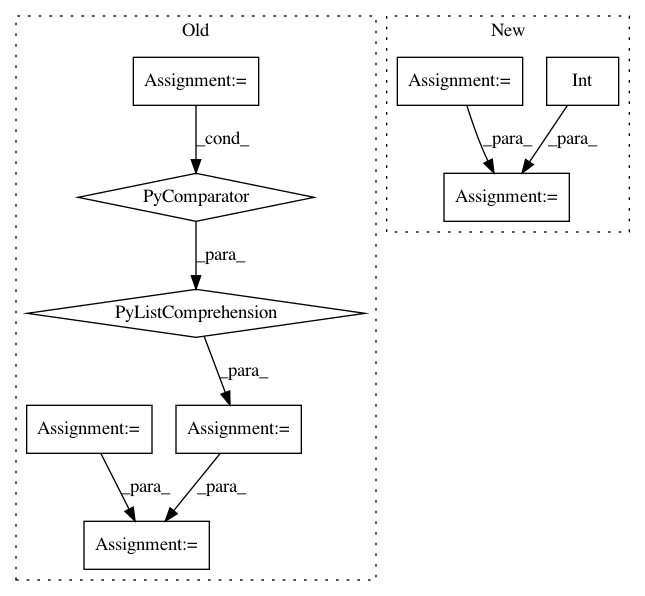

984d17836d7a6240942cd44f2f61c92a427bb9bb,niftynet/layer/crop.py,CropLayer,layer_op,#CropLayer#Any#,25
Before Change
kernel_shape = np.hstack((
[self.border * 2 + 1] * spatial_rank, 1, 1)).flatten()
// initializer a kernel with all 0s, and set the central element to 1
np_kernel = layer_util.trivial_kernel(kernel_shape)
crop_kernel = tf.constant(np_kernel, dtype=inputs.dtype)
// split channel dim
output_tensor = [tf.expand_dims(x, -1)
for x in tf.unstack(inputs, axis=-1)]
output_tensor = [tf.nn.convolution(input=inputs,
filter=crop_kernel,
strides=[1] * spatial_rank,
padding="VALID",
name="conv")
for inputs in output_tensor]
output_tensor = tf.concat(output_tensor, axis=-1)
return output_tensor
After Change
def layer_op(self, inputs):
spatial_rank = layer_util.infer_spatial_rank(inputs)
offsets = [0, *([int(self.border)] * spatial_rank), 0]
out_shape = [-1, *[int(d) - 2 * int(self.border) for d in list(inputs.shape)[1:-1]], -1]
output_tensor = tf.slice(inputs, offsets, out_shape)
return output_tensor
In pattern: SUPERPATTERN
Frequency: 3
Non-data size: 9
Instances
Project Name: NifTK/NiftyNet
Commit Name: 984d17836d7a6240942cd44f2f61c92a427bb9bb
Time: 2018-04-24
Author: z.eaton-rosen@ucl.ac.uk
File Name: niftynet/layer/crop.py
Class Name: CropLayer
Method Name: layer_op
Project Name: eriklindernoren/Keras-GAN
Commit Name: 6f90dac721f38b365ad87e1633860f53b9ca44db
Time: 2018-03-14
Author: eriklindernoren@gmail.com
File Name: discogan/data_loader.py
Class Name: DataLoader
Method Name: load_data
Project Name: senarvi/theanolm
Commit Name: eb8b70c825ef3e02818cbfa95c0f8a9ec4184275
Time: 2015-12-25
Author: seppo.git@marjaniemi.com
File Name: theanolm/network.py
Class Name: Network
Method Name: __init__